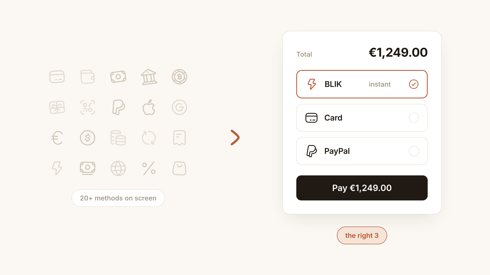
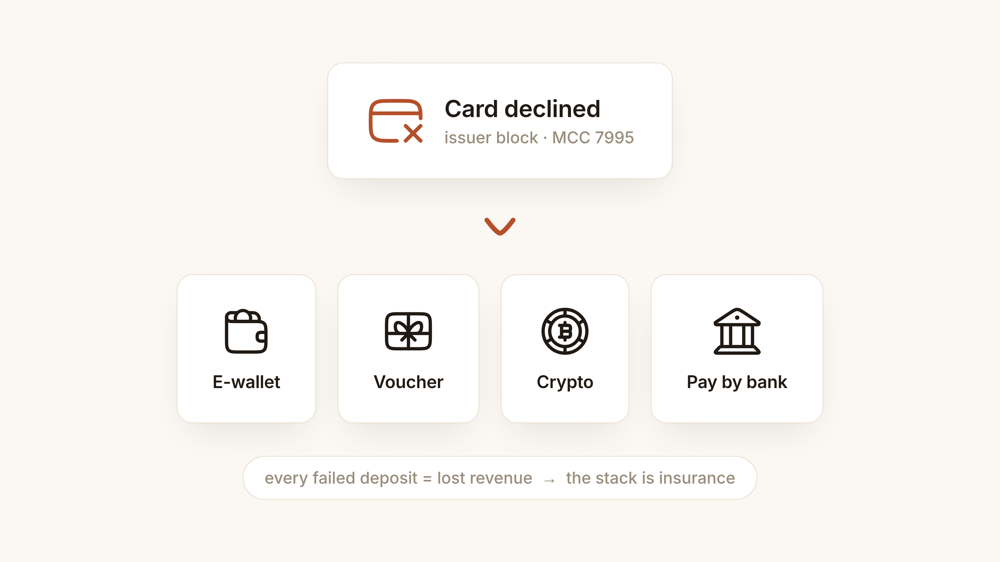
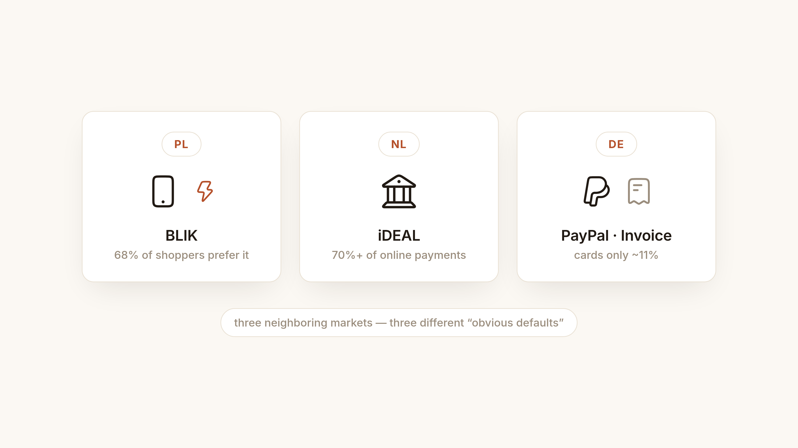
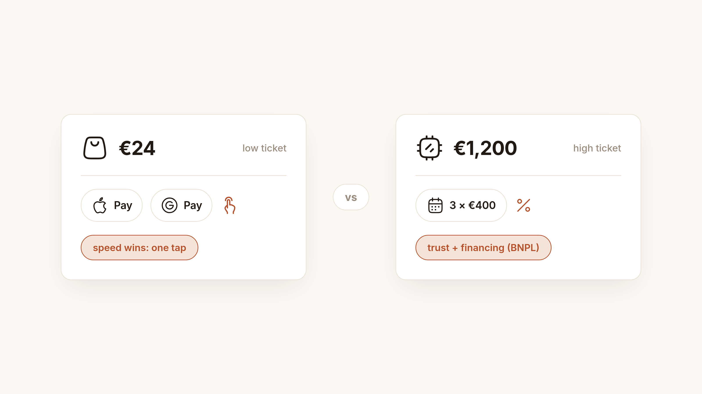
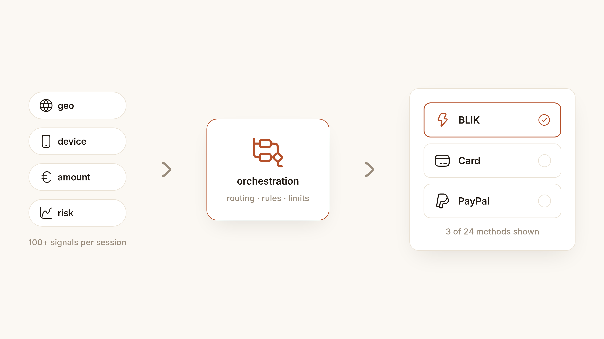

Open the deposit page of any iGaming platform and you'll find a wall of payment options: cards, e-wallets, bank transfers, vouchers, sometimes a dozen cryptocurrencies. Open a well-designed retail checkout and you'll see three or four. It's tempting to read the iGaming cashier as "more advanced" — more coverage, more choice, more freedom for the user.
It isn't. That long list exists for reasons that have nothing to do with good UX, and copying it into a regular e-commerce checkout would be a mistake. Here's why — and what a well-designed checkout should do instead.

The iGaming cashier is a survival mechanism, not a UX benchmark
iGaming operators don't offer twenty payment methods because players love choice. They do it because a huge share of their would-be deposits fail.
Cards issued for gambling transactions are declined constantly: many banks apply a gambling block to MCC 7995 by default, and an issuer tightening its risk model can tank authorization rates in a specific country overnight. Industry payment teams treat "sudden auth-rate drop by country or BIN" as a recurring operational incident — the standard fix is cascading to a different acquirer or adding an alternative rail like pay-by-bank or an e-wallet (Payneteasy). E-wallets like Skrill and Neteller exist in the stack precisely because they bypass card blocks entirely (EMS).
Add the context: a player wants to deposit right now, mid-session, and any failed payment is lost revenue. Add geo fragmentation and a segment of users who want privacy, and you get the typical operator stack — one bank rail, two e-wallets, a voucher option for unbanked players, a crypto PSP, and a card acquirer (Fluid Payments).
That's not generosity. That's insurance against decline rates, urgency, and anonymity demand. A retailer selling headphones doesn't have these problems — so it doesn't need these solutions.

In retail, more options on screen means fewer completed purchases
Baymard Institute, which has benchmarked checkout usability across large-scale studies for years, puts the average cart abandonment rate at roughly 70% — and its payment UX research is blunt about option overload: a long row of payment logos "creates visual noise and forces users to scan everything before making a choice." Their recommendation is to group methods logically, show the most common methods for your market prominently, and hide the rest behind a "more payment options" link (Baymard Institute).
The same research found that 21% of e-commerce sites have problems with how they present payment options — problems that directly cause abandonments when users don't see a method they trust or can't find one at all.
Users abandon when their method is missing — and when the list is overwhelming. The design problem is not "how many methods," but how fast a given user sees theirs.
Localization beats quantity, every time
What "their method" means changes completely by market:
Poland. BLIK is preferred by 68% of online shoppers (Gemius, via trade.gov). In Q1 2025 Poles made 325M online payments with BLIK versus 77.8M with cards — over four times the card volume (TVP World). A Polish checkout that leads with a card form is optimizing for the minority.
Netherlands. iDEAL accounts for over 70% of e-commerce transactions — 1.5 billion payments in 2025 alone (Dutch Payments Association, Airwallex). In a country where the word for debt also means "guilt," direct bank transfers beat credit.
Germany. Cards handle only ~11% of online purchases — the lowest share of any major Western economy. PayPal leads at ~28%, invoice payment (Rechnungskauf) holds ~27%, SEPA direct debit ~17% (HDE/Worldpay data via Hyperswitch). Some studies put it starkly: up to 82% of German shoppers abandon a purchase if their preferred method is unavailable (Cross-Border Magazine).
Three countries, three completely different "obvious defaults." Twenty methods shown to everyone serves no one; four methods matched to the market serve almost everyone.

The economics of the cart decides the mix
Payment method relevance isn't only geographic — it scales with the price on the screen.
For low baskets, speed wins: express wallets (Apple Pay, Google Pay, PayPal) in one tap, card as fallback. Amazon trained two decades of shoppers to expect checkout to take seconds.
For high-ticket goods — electronics, furniture, travel — the calculus flips. Trust matters more than speed, and financing becomes a payment method in its own right. Affirm's average order value sits around $255–300, roughly 2.5× Klarna's, precisely because it positions for $500+ purchases like electronics and appliances (Just Pricing). Across providers, BNPL consistently lifts average order value — conservative independent estimates start around +17%, with vendor claims running 20–40% and up (Digital Applied, Chargeflow). An electronics checkout without an installment option isn't minimal — it's leaking revenue on exactly the carts that matter most.
So the "right" list isn't static even within one store: it depends on what's in the cart and how much it costs.

The list on screen should be computed, not written
This is where modern PSP architecture comes in — and where checkout design stops being a UI exercise and becomes a systems problem.
Stripe's dynamic payment methods use AI models trained on more than 100 real-time signals — country, currency, amount, device, method uptime, popularity among similar customers — to decide per session which methods appear and in what order, with rules and A/B tests on top (Stripe docs). Adyen's dynamic payment method ordering does the same, optimizing the order for conversion or cost per shopper, drawing on trillions of dollars of transaction data (Adyen docs, Adyen Personalize).
Two customers can open the same checkout an hour apart and see different payment options — and neither is seeing a bug. The list is computed per transaction, not hardcoded.
I've worked on the other side of this: designing payment gateway back offices where merchants configure provider credentials, routing rules, blocking rules, and limits. The insight that shaped how I think about checkout design is this:
The method list a shopper sees is the output of an orchestration layer, not a static design artifact. Good checkout UI doesn't present a list — it presents a decision the system has already made.

So where does crypto fit?
Mostly, it doesn't — for now, in mainstream retail. Crypto in iGaming solves specific problems: banking restrictions, cross-border speed, privacy-seeking users. In regular e-commerce those problems barely exist, while crypto's costs are real: price volatility between checkout and settlement, refund complexity, and thin consumer demand outside crypto-native niches like digital goods. It's a legitimate option for specific audiences, not a default row in every checkout.
The test is the same as for any method: does a meaningful share of your users, in your market, at your price point, actually want to pay this way? If yes — show it. If not — supporting it quietly behind "more options" costs nothing, but displaying it costs attention.
A designer's checklist
If you're designing or auditing a checkout, the method-selection logic should answer five questions:
- Geo: What are the top 2–3 methods in this user's market? (BLIK in Poland, iDEAL in the Netherlands, PayPal + invoice in Germany.) Are they first?
- Device: On mobile, are express wallets (Apple Pay / Google Pay) above the fold?
- Ticket size: Above a threshold, is an installment/BNPL option visible?
- Density: Is the visible list short (3–5), with everything else behind a "more payment options" disclosure?
- Fallbacks: If a payment fails, does the checkout offer a relevant alternative instead of a dead end?
The bottom line
The iGaming cashier with twenty payment methods isn't a vision of where checkout design is heading — it's an artifact of an industry where payments fail constantly and every lost deposit is lost revenue. Retail's constraints are different: attention is scarce, trust is local, and the best checkout is the one where each user instantly sees their way to pay.
Breadth of payment methods is a capability. Depth of relevance is the experience. Build the first in your orchestration layer — and design the second on the screen.
Sources
- Baymard Institute — Payment UX research
- Payneteasy — Casino payment methods: complete guide
- EMS — Payment methods for iGaming platforms
- Fluid Payments — Top iGaming payment gateways
- trade.gov — Poland eCommerce (Gemius data)
- TVP World — BLIK mobile payments surpass cards
- Dutch Payments Association — iDEAL / Wero
- Hyperswitch — Popular payment methods in Germany
- Cross-Border Magazine — E-commerce payments in Germany
- Stripe — Dynamic payment methods
- Adyen — Checkout settings & dynamic ordering
- Just Pricing — Klarna vs Affirm